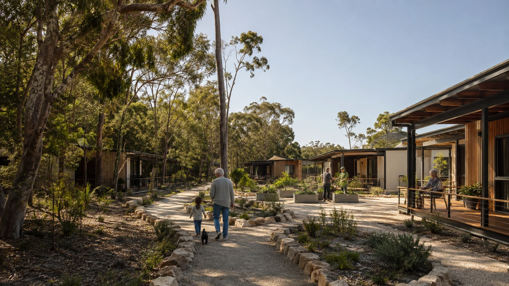

Safety, rest and a stable first response.

Housing and supported living across different stages of life.
The focus is the missing path between immediate shelter, supported transition, stable homes and housing that adapts as people age.
Four stages, with a prepared next step.
Each handover involves a place to go, a responsible service, transport, income and enough time to plan.
Routine, services, income and planning.
Security, privacy and continuing connection.
Adaptation, access and support as needs change.
Adaptable homes on a sand island.
Lightweight construction, shade, ventilation, accessible paths, private outdoor space and retained vegetation offer a practical field for exploration.
Independent living
Homes remain homes, not permanent program spaces. Residents need privacy, choice and ordinary daily life.
Adaptation over time
Ramps, bathrooms, lighting, passive comfort and flexible rooms support changing mobility, family and care needs.
Shared space by choice
Gardens, shade, meals, tools and transport offer connection without removing private space.
Local repair and maintenance
Making, training and site-care pathways link housing quality with practical work and skills.
NSI Housing is one possible connection.
Its properties, priorities and possible role would come from its own discussions and decisions.